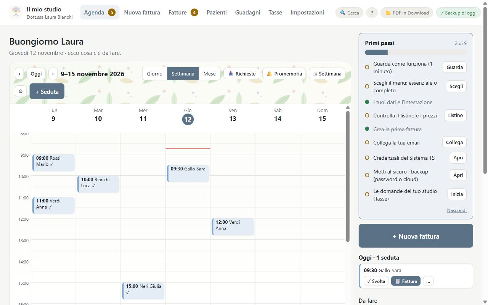
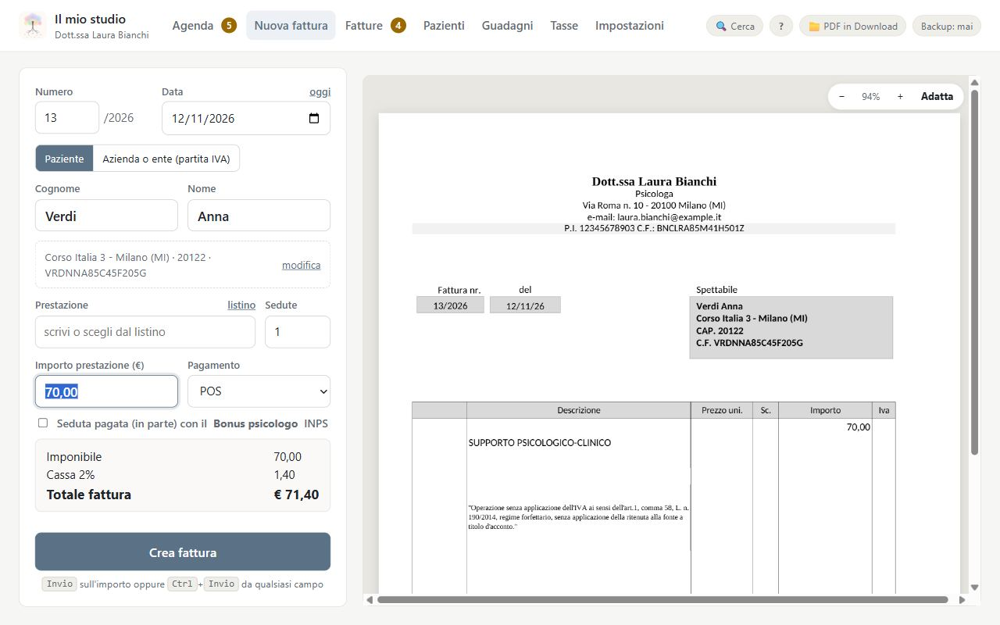
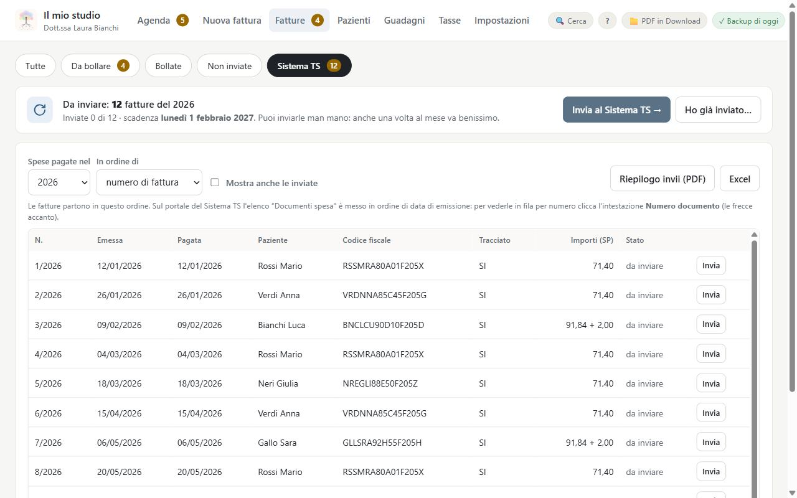
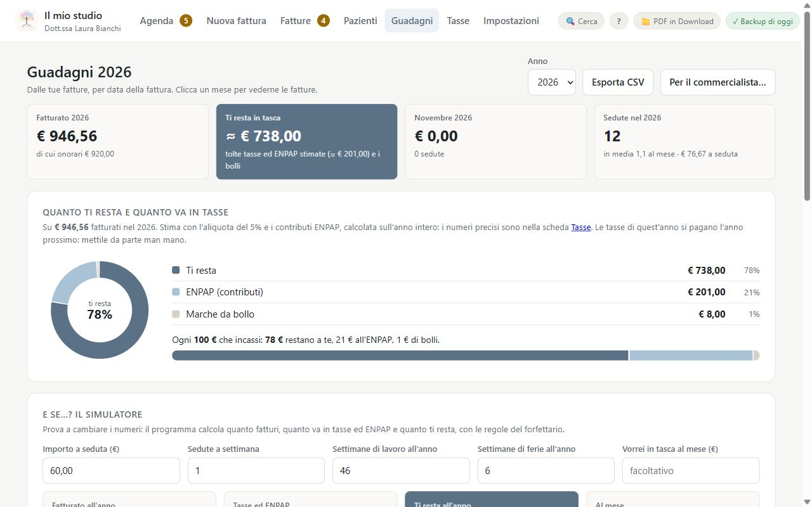
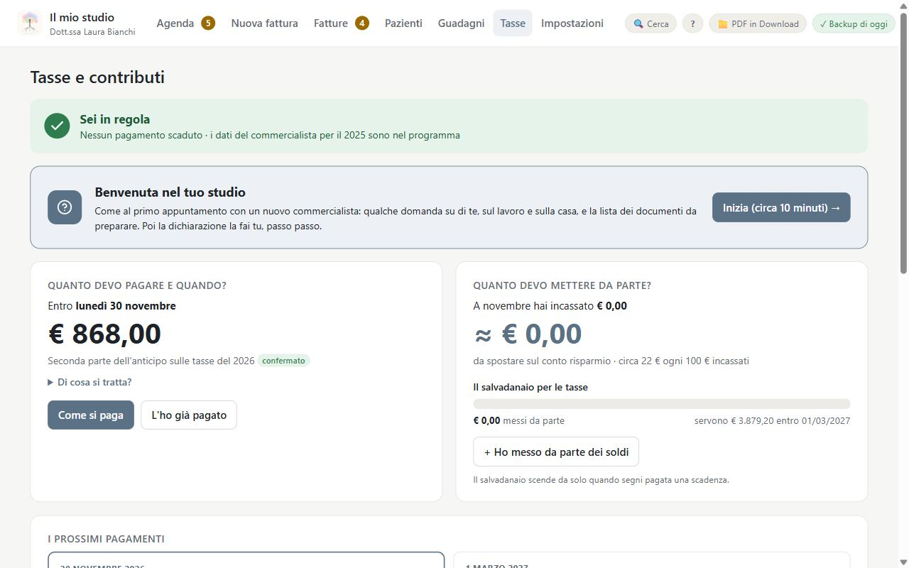
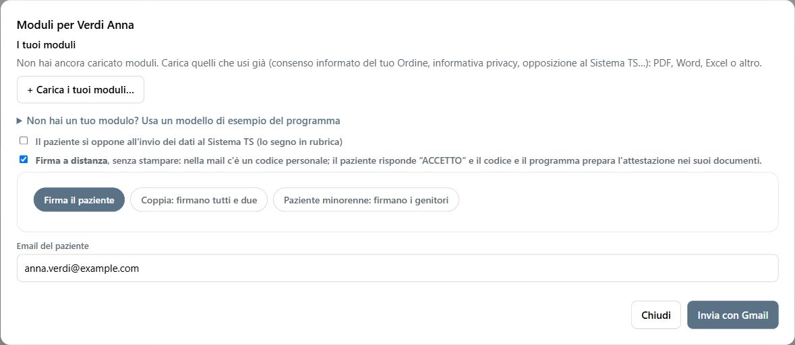

uno
Tutto comincia da una seduta.
La segni in agenda, con il colore del tipo e del luogo. Il giorno prima il paziente riceve il promemoria, per email o WhatsApp.
Dalla prima seduta all'invio al Sistema Tessera Sanitaria: agenda, fatture, consensi, tasse ed ENPAP in un unico programma. Sul tuo computer, non su un server.
✓Usato ogni giorno da una psicologa in studio · oltre 100 fatture inviate al Sistema Tessera Sanitaria
La segni in agenda, con il colore del tipo e del luogo. Il giorno prima il paziente riceve il promemoria, per email o WhatsApp.
Dalla seduta, un clic: numero, dati del paziente, prestazione e importo sono già lì. Nel tuo modello, con la tua intestazione.
Sopra i 77,47 € la marca da bollo si aggiunge da sola. Il bonus psicologo e il contributo ENPAP sono già calcolati.
Il programma cifra la spesa e la invia con le tue credenziali. Tu guardi solo l'esito: accolta.
Quanto mettere da parte ogni mese, quando pagare imposta ed ENPAP, con le regole del forfettario. Stime chiare da confrontare con il commercialista.
Il paziente riceve il modulo per email e risponde ACCETTO con il suo codice personale. Il programma prepara l'attestazione e la archivia nella sua scheda.

Agenda. La settimana, le sedute di oggi e le cose da fare.

Nuova fattura. A sinistra i dati, a destra la fattura com'è.

Sistema TS. Le spese da inviare, in ordine, con un tasto.

Guadagni. Quanto incassi e quanto ti resta davvero.

Tasse. Se sei in regola e il prossimo pagamento.

Consenso. Paziente, coppia o minori: firma a distanza.
Una fattura in pochi secondi, l'invio al Sistema TS, quanto ti resta e le tasse: il programma vero, con dati di esempio.
Il Gestionale psicologi è nato per una psicologa in regime forfettario, che lo usa ogni giorno nel suo studio. Ogni funzione arriva da un problema reale: la marca da bollo da ricordare, l'invio al Sistema TS che a gennaio diventa una corsa, il consenso informato da far firmare anche a chi segue online, i conti delle tasse a fine anno.
Poi l'abbiamo reso adatto a tutte e tutti: psicologhe, psicologi e psicoterapeuti che vogliono meno burocrazia e più tempo per i pazienti.
— Paolo, sviluppatore del programma
Il programma lavora sul tuo computer. Nomi, codici fiscali, fatture e credenziali non passano da nessun server: nemmeno chi ha fatto il programma può vederli.
Le risposte alle domande che ogni psicologa si fa, scritte in modo semplice.
Prezzo della seduta, sedute a settimana, settimane di lavoro: vedi subito quanto va in tasse ed ENPAP (2026 e 2027) e quanto resta a te.
Prova il calcolatore →E se ti chiedi dove finiscono i dati dei tuoi pazienti: la sicurezza dei dati, spiegata semplice →
Ti mostro il programma dal vivo, rispondo alle tue domande e, se vuoi, lo installiamo insieme. Gratis e senza impegno.
L'agenda e le fatture anche dal telefono, collegato al tuo computer sulla Wi-Fi di casa o dello studio. Nessun cloud: i dati restano tuoi.
Per ora no: funziona su computer con Windows 10 e 11. Una versione per Mac è in valutazione: se ti interessa, scrivilo nella richiesta di prova.
Dal Microsoft Store: il programma è controllato e firmato da Microsoft, si installa senza avvisi di Windows e gli aggiornamenti arrivano da soli. Su un computer dove lo Store è bloccato si può usare l'installatore classico, che trovi dopo il modulo.
In questa fase di lancio la prova è gratuita: 30 giorni completi, senza carta di credito. Quando il programma sarà in vendita il prezzo sarà indicato chiaramente prima di qualsiasi scelta, senza rinnovi automatici.
Se decidi di non continuare non perdi niente: le fatture già fatte restano consultabili, stampabili e inviabili al Sistema TS, e puoi sempre esportare i tuoi dati. Serve il codice di attivazione solo per fare fatture nuove.
Per lavorare no: fatture, agenda e pazienti funzionano anche senza connessione. Internet serve solo per inviare al Sistema TS, mandare le email e ricevere gli aggiornamenti.
Restano sul tuo computer e non passano da nessun server. Puoi mettere una password all'apertura del programma; i backup si fanno da soli ogni giorno e si possono proteggere con una password e copiare su una chiavetta o nel tuo cloud.
Inserisci una volta le tue credenziali del Sistema TS, che restano cifrate sul tuo computer. Il programma prepara le spese, le cifra con il certificato ufficiale e le invia; per ogni fattura vedi l'esito. Gestisce anche l'opposizione del paziente.
Sì: il programma legge i PDF delle fatture già emesse, anche fatte con un altro modello, ritrova i pazienti e riparte dalla numerazione giusta.
Per le fatture ad aziende ed enti prepara il file della fattura elettronica; l'invio allo SdI resta a te o al tuo intermediario. Per i pazienti la fattura è in PDF e la spesa va al Sistema TS, come previsto per i professionisti sanitari.
No. Ti dice quanto mettere da parte e quando pagare, con stime calcolate sulle tue fatture e sulle regole del forfettario. Sono da confrontare con il commercialista, che resta il tuo riferimento.
Installi il programma sul nuovo computer e ripristini l'ultimo backup: ritrovi tutto, fatture, pazienti, agenda e documenti.
30 giorni completi, gratis. Ci lasci nome, email e professione e si apre il Microsoft Store: niente codici da aspettare.
Scarica la prova gratuita → Per Windows 10 e 11 · dal Microsoft Store · nessuna carta di creditoPreferisci scriverci prima? Scrivici. I tuoi dati li usiamo solo per mandarti il programma e seguirti durante la prova: niente pubblicità, non li diamo a nessuno. Informativa privacy